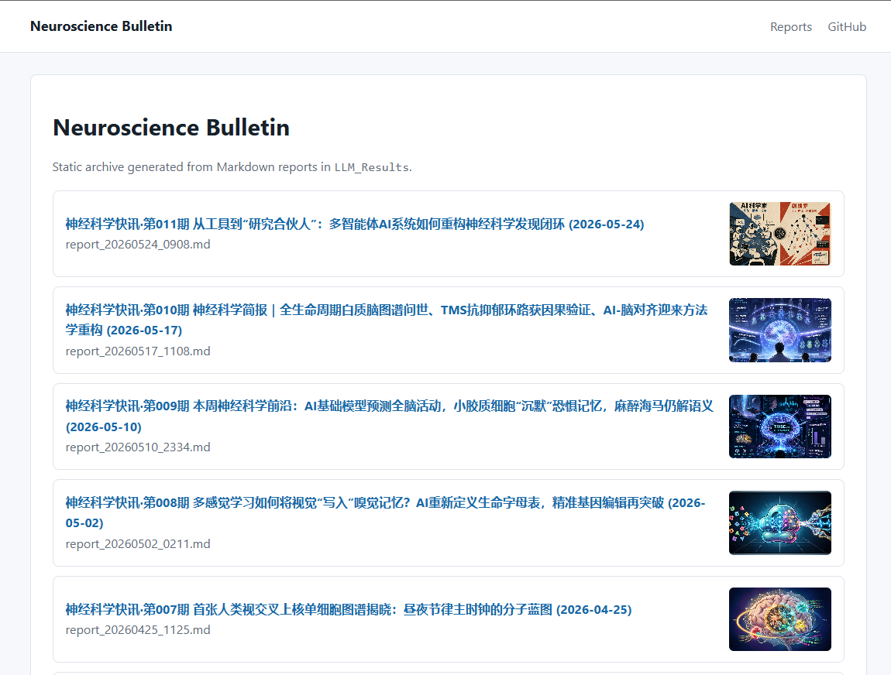
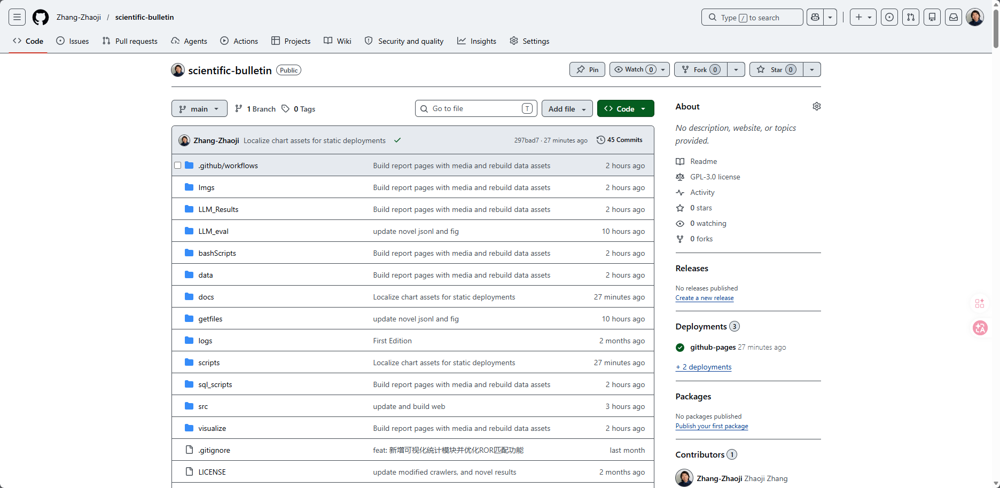
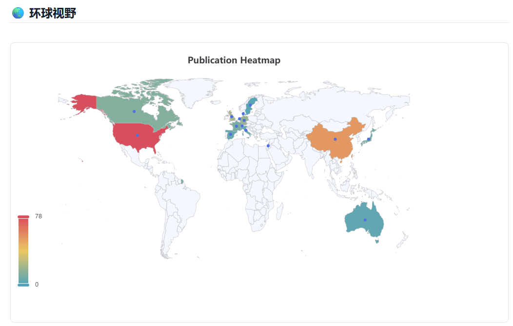
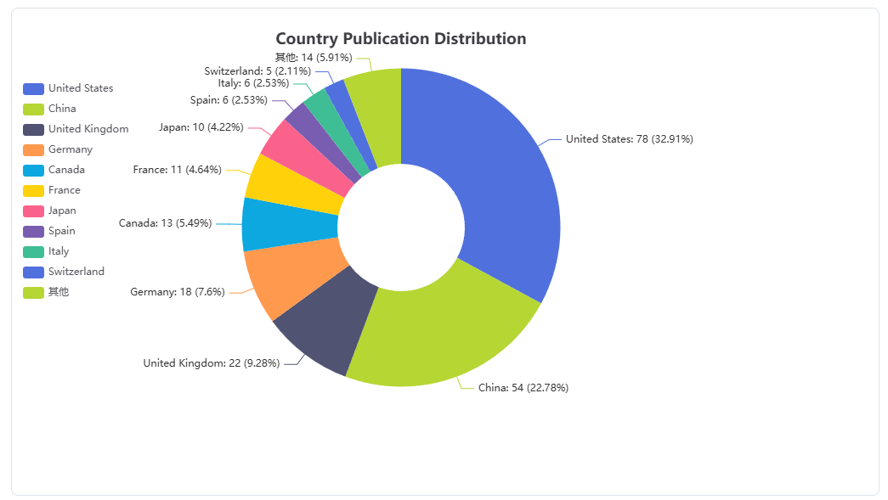
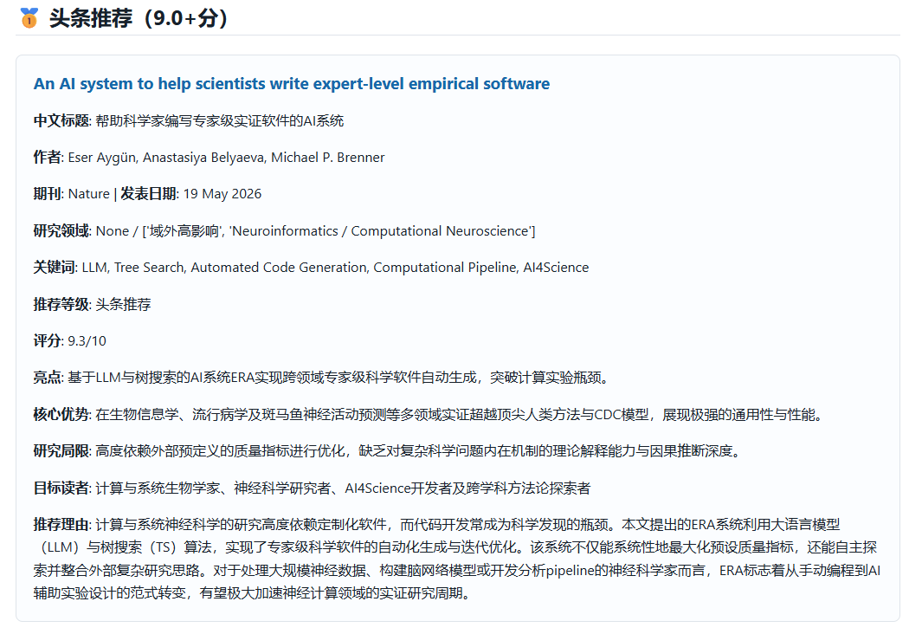
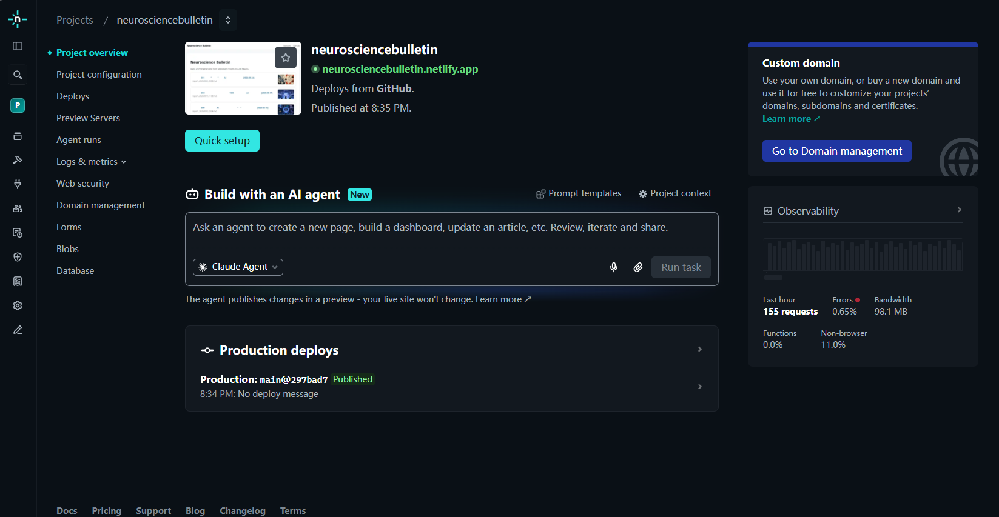

神经科学快讯·special issue｜神经科学快讯网站上线：更稳定地浏览每周前沿报告
过去几个月，我们一直在整理和发布每周的神经科学前沿论文快讯。内容主要覆盖神经科学、脑科学、AI for Science、神经调控、认知科学、精神疾病机制、脑机接口等方向，并尝试用结构化的方式筛选、评分和总结近期论文。主要的目的是为了我个人阅读文献，学习前沿神经科学知识的方便，也把源代码和运行结果开源给社区来帮助大家收获一些新的知识。
为了让这些报告更方便阅读和归档，我们最近把「神经科学快讯」整理成了一个独立网站：
👉 https://neurosciencebulletin.netlify.app/

上面这个网站在国内似乎是可以直接访问的。如果你经常使用魔法，我们也部署了github pages：https://zhang-zhaoji.github.io/scientific-bulletin/ 。

尽管我们部署了网站，但我们在国内社交媒体平台上仍然会继续更新。
知乎平台上的更新将会长期保持稳定，在微信公众号上的更新可能会不太稳定。这是因为知乎文章长度限制是100000字，而微信公众号一篇文章的字数上限限制为50000字，而我们一周现在能够产出10~20万字的文章分析。微信公众号里免费用户每天只能群发一次，这就导致我们要么减少内容，要么必须连续3到4天发布，这对于我来说有点麻烦，并且前几周有好几期因为工作被中断了。在找到良好的自动化解决方法之前，我们可能只能无奈选择暂停公众号上的更新。
不过，对于神经科学快讯之外的文章更新，我会一直在公众号上同步发布。微信公众号上发布的meme因为时间原因可能一段时间内不会更新了。
为什么要做一个网站？
此前，每周报告主要以 Markdown、微信公众号、知乎文章等形式发布。这种方式适合传播，但也有几个问题：
- 正如上面所说的，长度限制。
- 往期内容不容易系统浏览；
- 图表、封面和交互内容展示受平台限制，尤其是基于js的可互动图表；
- 长报告在不同平台上的排版效果不一致。
因此，我们做了两个静态网站版本，把每周报告统一归档，并补充更适合网页浏览的结构和可视化内容。
网站里有什么？
目前网站主要包括：
1. 每周神经科学快讯归档
首页按时间倒序列出每期报告，并展示对应封面图。读者可以快速找到某一期内容，也可以把它当成一个长期更新的神经科学前沿索引。
2. 更适合阅读的报告页面
每篇报告都被转换成独立网页，保留原有 Markdown 内容，同时加入更清晰的网页排版。
报告页顶部会展示当期封面图，正文中则保留本周概览、论文推荐、深度解读、简要提示和过滤统计等内容。
3. “环球视野”可视化
我们在每期报告中加入了一个新的小板块：🌏 环球视野。之前知乎的版本中不够稳定，我们最近几期都没有继续用了，不过在网页里我们进行了修复，并且在之前每一期都添加了这个板块。
这里会展示本周论文来源国家/地区的分布，包括：
- 全球国家热力图；
- 国家分布饼图。


这些图表可以帮助我们更直观地看到每周论文来源的地理分布，也能观察不同国家和地区在神经科学相关研究中的活跃程度。
技术上做了什么？
这个网站目前是一个静态站点，由每周生成的 Markdown 报告自动构建而来。
大致流程是：
- 抓取和整理论文数据；
- 对论文进行作者、机构、国家等信息富集；
- 使用 LLM 对论文进行筛选、评分和总结；
- 生成每周 Markdown 报告；
- 构建为静态 HTML 网页；
- 自动部署到网站。
同时，我们也把图表依赖本地化，减少对外部 CDN 的依赖，让国内访问时图表加载更稳定。

为什么选择 Netlify？
我们之前也尝试过 GitHub Pages。GitHub Pages 对海外访问比较友好，也很适合作为开源项目的展示页面。
但考虑到国内访问体验，我们这次增加了 Netlify 部署版本：
👉 https://neurosciencebulletin.netlify.app/
Netlify 对静态网站支持比较成熟，部署流程简单，也方便后续接入自定义域名。现阶段我们会先观察它在不同网络环境下的访问表现，再决定是否继续优化部署方式。

接下来会更新什么？
这个网站目前还在早期阶段。后续我们可能会继续补充：
- 更完整的历史报告归档；
- 更清晰的专题分类；
- 国家、机构、研究方向的长期趋势图；
- 更适合移动端阅读的页面样式；
- 每周报告中的图表和封面优化；
- 面向特定主题的检索和索引页面。
我们的目标不是做一个新闻网站，而是做一个持续更新的神经科学前沿观察工具：既能帮助快速浏览本周重要论文，也能慢慢积累成一个可回溯、可分析的研究趋势档案。
欢迎访问
神经科学快讯网站：
👉 https://neurosciencebulletin.netlify.app/
如果你关注神经科学、认知科学、脑疾病、AI 与科研自动化、神经调控或脑机接口，欢迎收藏这个页面，也欢迎大家给我们点个赞点个star之类的。我们会持续更新每周报告，也会继续改进网站的阅读体验和数据可视化。